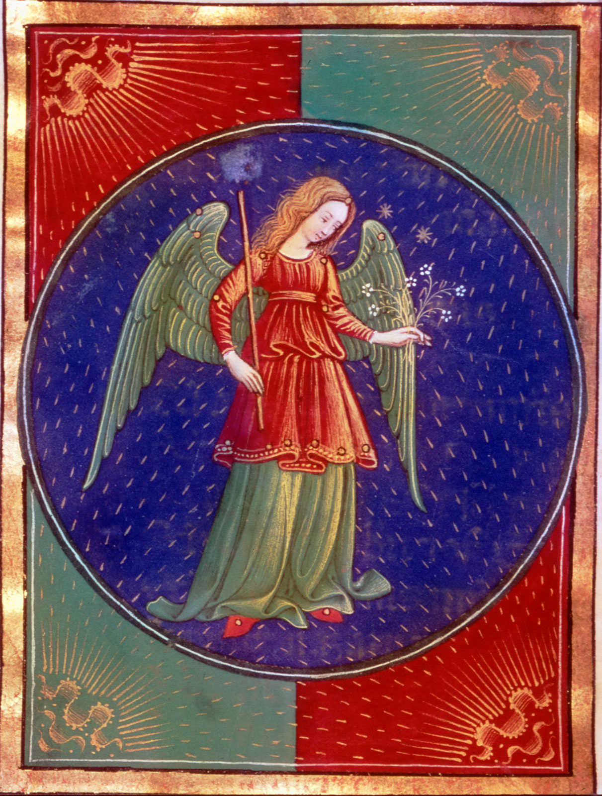

|

|
Virgo, (Latin: “Virgin”) in astronomy,
zodiacal constellation lying in the
southern sky between Leo and Libra,
at about 13 hours right ascension and
2° south declination. The constellation’s
brightest star, Spica (Latin for “head of
grain,” also called Alpha Virginis), is the
15th brightest star in the sky, with a
magnitude of 1.04. Virgo contains the
nearest large cluster of galaxies, the Virgo
cluster, in which is located the giant elliptical
galaxy Virgo A and PSR 1257+12, the pulsar
around which the first extrasolar planets were
discovered in 1992. In astrology, Virgo is the
sixth sign of the zodiac, considered as governing
the period from about August 23 to about September
22. It is represented as a young maiden carrying a
sheaf of wheat. She is variously identified as a fertility
goddess (the Babylonian and Assyrian Ishtar, among
others) or the harvest maiden (the Greek Persephone
and others).
|